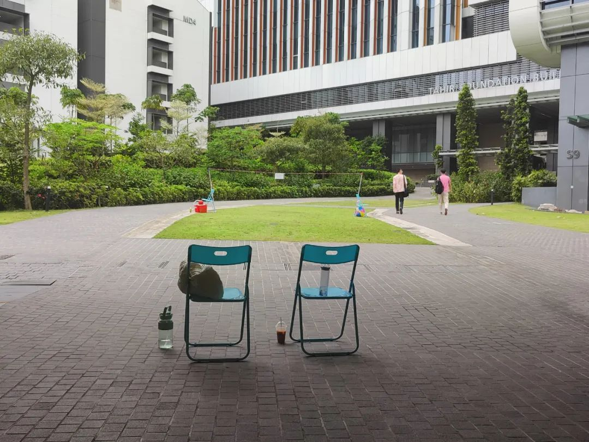

和平常的时候一样，开头总得为今天要说的内容随手做个定义。就像说了一个分子，我们都知道在不同条件下它的构型会变化，比如在不同离子强度的环境中表达出什么样的取向。扯远了。实验室专指我把电脑这一切都准备好了的地方。加上笔记本电脑的显示屏，我又外接了两个。他们分别是25寸的高清显示屏，购于两年前；还有一个我刚从国内进口来的几百块钱23寸竖屏，以前那个已经老化得没法看了，连看文本都是糊的。所以前后联起来三个屏：左边是笔记本的横屏、中间是超高清的大横屏、右边是一个普通的竖屏。看起来就很赏心悦目。一般就还是在中间的屏幕上操作我现在正在写的东西，在左侧的屏幕上看一下正在跑着的进程，然后在右边的竖屏上看一些折叠了需要整体把握的内容。今天实验室没有什么人。当我开始打字这篇文章的时候，坐不远处的朋友说开始只能隐约听到我这边好像在放什么歌，其实我在听蓝调。突然之间听到我开始打字，就是一长串噼里啪啦的声音。昨晚跟室友说起我最近构思出来的几个比较奇妙的比方，一个是 实验室就像我的网吧，另一个是 狗被人踹多了是这样的。后者是说各种娴熟地避开坑，以及终于把几乎所有可能出毛病的东西都关联了起来。至少在计算这一块是这样的。当然这种比方想要引申开了去那还不是无穷无尽，我就不举例了。赶末班车回寝。在货架上挑了好一会吃什么，价格的确还挺受伤的。主要也没必要。那种感觉就像是我已经对这个东西有心理预期了，但是又没有特别强的动力说我一定要买下来。所以就随便买了一桶，但其实也就放在那里。从拉萨八廓街运了一些藏香到这边来。等了一炷香烧完，也埋头吃了一碗凉皮。耳机放在椅子上忘记拿也忘记充电了。在校车上听到别人说话，尤其那种语速都快超过我打字速度的，只想一拳上去把那个声带绕地球一周看看能不能给我带到赤道雪峰乞力马扎罗。吃完了。洗过澡了。有一些虽然会给生活带来便利的行为，但他们最终让我觉得为什么要这么做呢？两年前我在寝室里放了不少的日清泡面，后来也出闲置给楼下的好姐妹了。
你当然也知道，干饭会快乐、掏耳朵会快乐、吃冰糖葫芦吃麦当劳会快乐。可这些快乐是生理反应，离开了，快乐也就离开了。麦当劳在这些快乐当中也许是最久的，毕竟吃撑了的感觉可是要切肤地消化酶起效一段时间才会让兴奋的神经平复。可这些也终究只是一会儿。过了这个快乐，又还在想新的方式。好在这样的方式够多。但那种平静的安逸的自然的快乐，最近的还是在上周我写的马来西亚游记中关于夕阳时刻的描述。昨天是4月1号，让我想起了2019年的这一天，是一个周一。有理有据地没有去那天的第一节课，那一天也只有一节课。和好朋友约在南三门，去粮道街吃天天红油赵师傅热干面和油饼包烧麦。在长江大桥的武昌边看了看，从中华路码头坐轮渡去了汉口。后来在大董社区逛了逛，爬楼看看夕阳，去青年路和另一位老友吃烧烤，然后晃晃悠悠返校，和往常没有什么不同地在麦当劳分别。出门一趟，照片可以连着发好多天。实不相瞒，拍这些图的时候一点构思也没有，吃老本不说 基本上是靠肌肉记忆在拍。甚至都比不上2018年秋天在武汉走街串巷拿着手机像弹簧刀一样捅来捅去的侧写力。现在只是设备好了很多 调色也老道了一点，但生命观察上没有前进只有倒退。很难得拿相机出去一次。回来之后坐在工位上打开命令行就开始叹气，累了想着休息一下导导照片，打开Lr就开始叹另一种气如果真的去看了我加了超链接的那篇武昌汉口私奔的话，很容易就能感觉到当时的照片以及行文和现在的那种反差。不是说现在拍得多么差，分析来分析去也都是一张足够交差的照片，但仅此而已了。你的照片里已经好久没有那些有趣的笑脸、夺框而出的关怀、须弥而又入微的风光，这些元素去哪里了呢？我这么说也意味着我就是这么觉得的。不是因为情绪走低而觉得自己拍的东西入不了自己的眼，而是知道照片拍出来就会是什么样，只是我没有任何动力去拍那些我认为非我所愿的内容。本来这个“非XX”的词会是非必要，可我想了想，这个词已经在中文互联网环境中被异化而且关联到了具体事件上容易移情，所以我换了另一个表达方式等到程序跑完我就走。今天至少不用等过夜。虽然等过夜也没关系，可我就想现在看到结果。看到这些我倒也不觉得有什么成就感，虽然它们在现实意义上来说都是不容易达到而且有一定意义的内容，只是我觉得也就这样吧，完成了一件很平淡的事而已。以前在长沙无聊的时候骑着共享小电驴出门，逮着谁就骂谁。无聊的陌生人，或者无聊的什么事，我也很无聊。南洋裁缝师，把什么无聊的东西都缝合到一起。